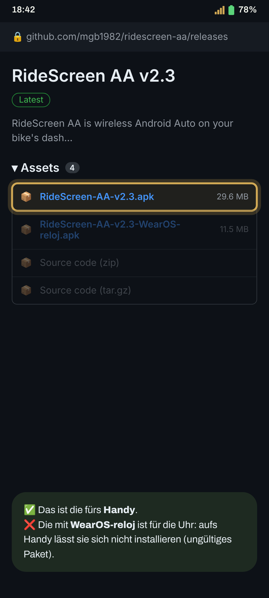
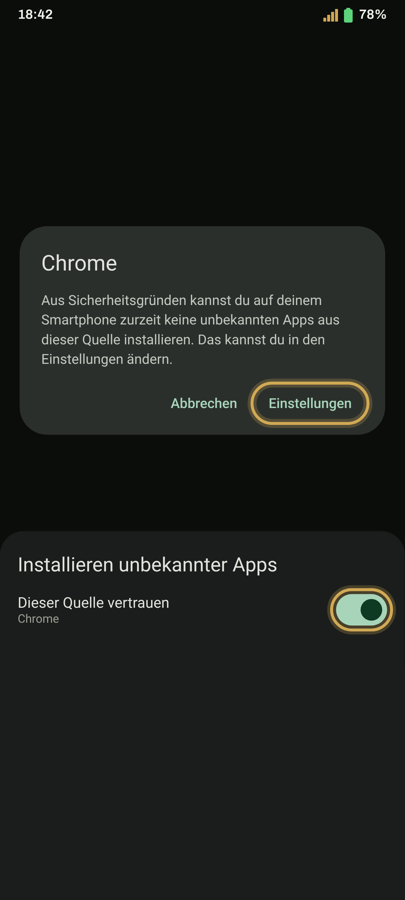
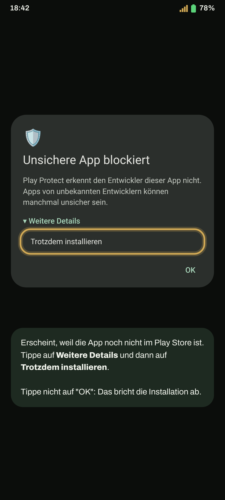
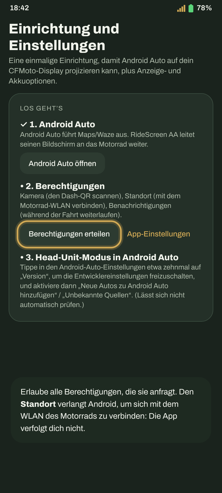
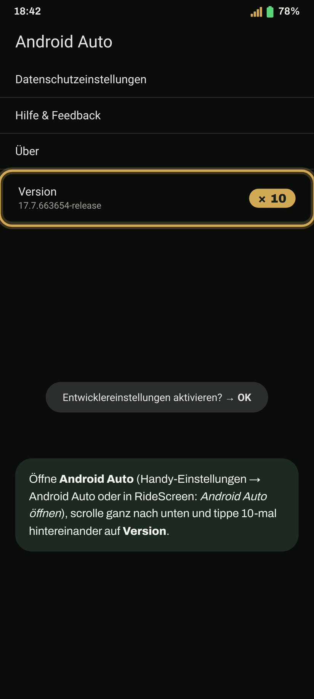
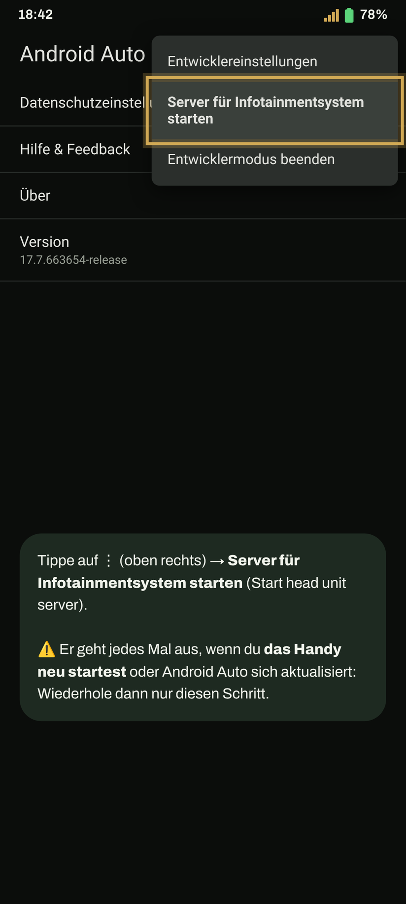
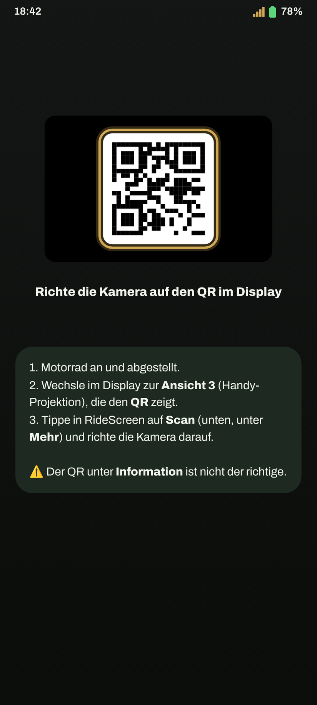
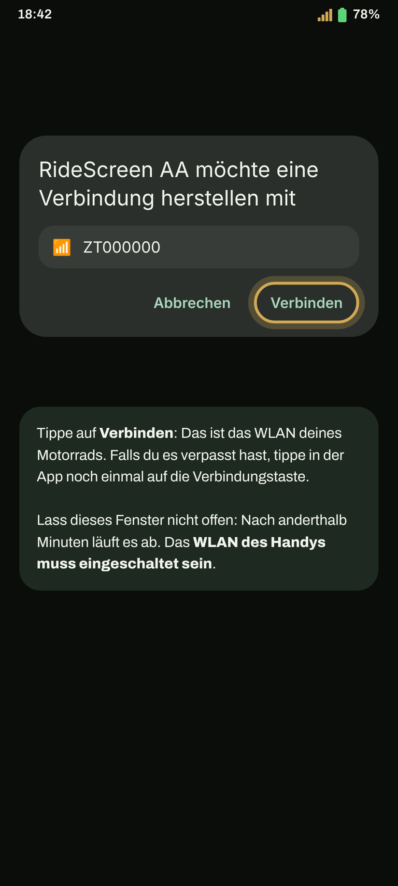
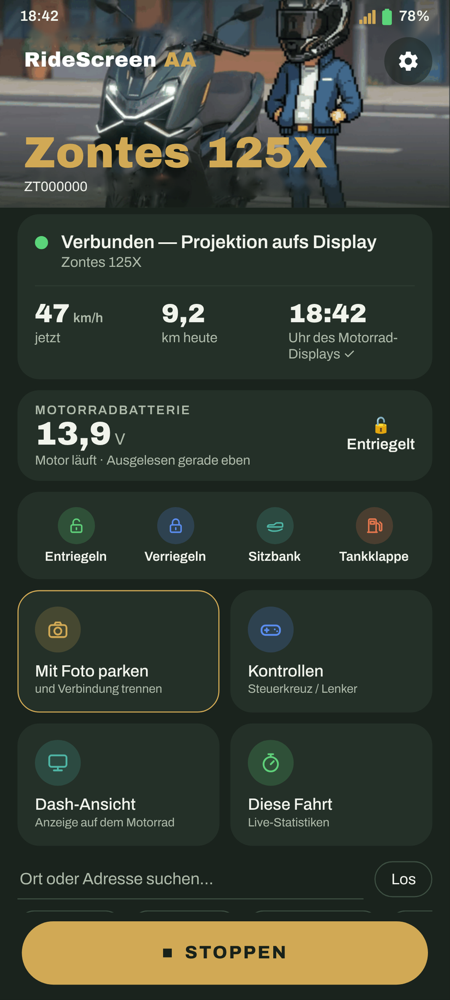

Android Auto im Display deiner Zontes, Schritt für Schritt. Beim ersten Mal dauert es ein paar Minuten; danach reicht ein Tippen, oder nicht einmal das.
Hast du eine Wear-OS-Uhr? Mach danach mit der Anleitung für die Uhr weiter.
Tippe auf den Button: Die neueste Version wird direkt heruntergeladen (RideScreen-AA-v2.4.1.apk oder die aktuelle).
APK herunterladenLieber GitHub? Tippe auf der Seite der neuesten Version unter Assets auf die APK, die mit RideScreen-AA-v beginnt.

Öffne die heruntergeladene Datei. Wenn Android meldet, dass es aus dieser Quelle keine Apps installieren kann, tippe auf Einstellungen, schalte Dieser Quelle vertrauen ein und geh zurück.
Tippe dann auf Installieren.

Erscheint, weil die App noch nicht im Play Store ist. Tippe auf Weitere Details und dann auf Trotzdem installieren.

Beim ersten Mal öffnen sich die Einstellungen. Erlaube alle Berechtigungen, die sie anfragt, oder tippe auf Alle Berechtigungen erteilt, um alle auf einmal zu prüfen.
Android verlangt den Standort, um sich mit dem WLAN des Motorrads zu verbinden und deine Fahrten zu speichern. Die App verfolgt dich nicht.

Öffne die Einstellungen von Android Auto (Handy-Einstellungen → Android Auto oder aus RideScreen). Scrolle ganz nach unten und tippe 10-mal hintereinander auf Version. Bestätige die Warnung.
Das musst du nur einmal machen.

Tippe auf demselben Bildschirm auf ⋮ (oben rechts) → Server für Infotainmentsystem starten (Start head unit server).

Wechsle im Display zur Spiegelungsansicht (Ansicht 3 bei der 125X): dem Bildschirm für die Handy-Projektion, der einen QR-Code zeigt. Tippe in RideScreen auf Scan (unten, unter Mehr) und richte die Kamera darauf.

Tippe in RideScreen auf Verbinden. Android fragt, ob sich die App mit dem WLAN des Motorrads verbinden darf (es heißt wie dein Motorrad, z. B. ZT…). Tippe auf Verbinden.

Ein paar Sekunden später erscheint Android Auto auf dem Bildschirm des Motorrads. Du kannst das Handy einstecken.
Nächstes Mal reicht ein Tippen auf Verbinden. Damit sie sich beim Starten des Motorrads von selbst verbindet: ⚙️ Einstellungen → Verbinden, wenn sich ein Bluetooth-Gerät verbindet → wähle das Bluetooth des Displays (beginnt mit „ZT“) und erlaube Über anderen Apps einblenden.
Tipp: Sobald die Verbindung steht, kannst du im Display zu einer anderen Ansicht wechseln, um das Original-Display zu sehen. Die App bleibt verbunden und zeichnet die Fahrt weiter auf, und wenn du zur Spiegelungsansicht zurückkehrst, ist Android Auto sofort da.
Beim ersten Verbinden fragt die App nach dem Mikrofon: Wähle Bei Nutzung der App, damit du „Ok Google“ und die Sprachtaste deines Headsets nutzen kannst.

Schalte das WLAN des Handys ein. Du musst dich mit keinem Netz verbinden: Die App verbindet sich selbst mit dem des Motorrads.
Die offizielle App des Motorrads (Zontes / EasyConnection / Carbit) hält die Verbindung zum Display. Einstellungen → Apps → diese App → Beenden erzwingen, dann erneut verbinden. Wenn du sie nicht nutzt, deinstallierst du sie am besten.
Tippe in RideScreen direkt nach dem Fehler auf ❓ Hilfe → Protokolle teilen und schick es an die Gruppe, mit deinem Motorrad und Handy. Die Protokolle enthalten keine Passwörter oder Seriennummern.
RideScreen AA ist kostenlos und Open Source, basiert auf OpenCfMoto von Alexandru (zanderp). Es ist keine offizielle Zontes-App. Die Screenshots sind Beispiele: Die genauen Texte können auf deinem Handy abweichen.